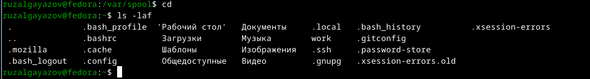

Цель данной лабораторной работы – приобретение практических навыков взаимодействия пользователя с системой посредством командной строки.
В операционной системе типа Linux взаимодействие пользователя с системой обычно осуществляется с помощью командной строки посредством построчного ввода команд.
Командой в операционной системе называется записанный по специальным правилам текст, представляющий собой указание на выполнение какой-либо функций в операционной системе. Обычно первым словом идёт имя команды, остальной текст — аргументы или опции, конкретизирующие действие.
Общий формат команд можно представить следующим образом: <имя_команды><разделитель><аргументы>
Утилоита pwd.
С помощью утилиты cd перехожу в подкаталог tmp корневого каталога.
С помощью утилиты ls, пока что без ключей, просматриваю содержимое каталога tmp. Опция -l позволит увидеть дополнительную информацию о файлах в каталоге: время создания, владельца, права доступа. Опция -a покажет скрытые файлы в каталоге.
Чтобы определить, есть ли в каталоге подкатлог с соответствющим именем воспользуемся утилитой ls с флагом -F, чтобы проверить, что мы найдем именно каталог.
Затем проверяю содержимое каталога с помощью утилиты ls.
 ## Создание директорий
Создаю директорию newdir с помощью утилиты mkdir.
Создаю для каталога newdir подкаталог morefun, проверяю, что каталог создан.
Создание нескольких директорий одной строчкой.
Удаляю несколько пустых директорий одной строчкой.
Пытаюсь удалить newdir с помощью rm.
Удаляю директорию newdir с помощью утилиты rmdir, т.к директория не пустая, я добавляю флаг удалить рекурсивно -p.
С помощью команды man ls я могу прочесть документацию к команде ls.
С помощью man cd узнаю описание команды cd и ее опции. Основных опций немного 1. -P - позволяет следовать по символическим ссылкам перед тем, как обработаны все переходы ‘..’ 3. -L - переходит по символическим ссылкам только после того, как обработаны все переходы “..” 4. -e - позволяет выйти с ошибкой, если диреткория, в которую нужно перейти, не найдена.
С помощью man pwd узнаю описание команды pwd и ее опции 1. -L - брать директорию из переменной окружения, даже если она содержит символические ссылки. 2. -P - отбрасывать все символические ссылки.
С помощью man mkdir узнаю описание команды mkdir и ее опции 1. -m - устанавливает права доступа создаваемой директории как chmod, синтаксис тоже как у chmod. 2. -p - позволяет рекурсивно создавать директории и их подкаталоги 3. -v - выводи сообщение о созданных директориях 4. -z - установить контекст SELinux для создаваемой директории по умолчанию 5. -context - установить контекст SELinux для создаваемой директории в значении CTX
С помощью man rmdir узнаю описание команды rmdir и ее опции 1. –ignore-fail-on-non-empty - отменяет вывод ошибки, если каталог не пустой, просто его игнорирует 2. -p - удаляет рекурсивно каталоги, если они все содержат в себе только удаляемый каталог 3. -v - выводит сообщение о каждом удалении директории.
С помощью man rm узнаю описание команды rm и ее опции 1. -f - игнорировать несуществующие файлы или аргументы, никогда не выводить запрос на подтверждение удаления 2. -i - выводить запрос на подтверждение удаления каждого файла 3. -I - вывести запрос на подтверждение удаления один раз, для всех файлов, если удаляется больше 3-х файлов или идет рекурсивное удаление 4. -r, -R - удаляет директории их содержимое рекурсивно 5. -d, –dir - удаляет пустые директории 6. -v - прописывает все действия команды
Опции –help –version применимы почти ко всем утилитам, они показывают справку по команде и ее версию соответственно.
Вывела историю команд с помощью утилиты history.